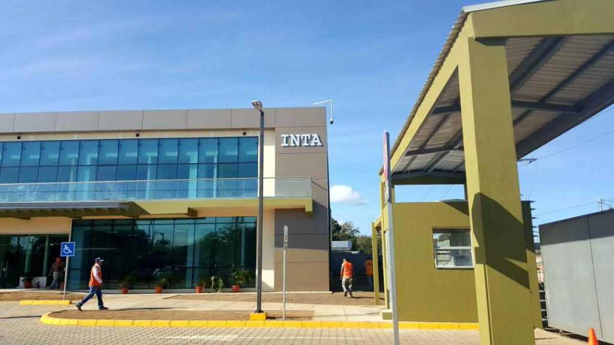

Acerca de INTA Conecta
Nuestra Misión
INTA Conecta es una plataforma digital creada por el Instituto Nicaragüense de Tecnología Agraria (INTA) para ofrecer información agrícola verificada y práctica a los agricultores. Nuestro objetivo es facilitar el acceso a conocimientos esenciales sobre semillas certificadas, control de plagas, nutrición de cultivos y prácticas agroecológicas.
Nuestro Compromiso
Validado por expertos del INTA, nuestra plataforma permite a los agricultores acceder a información detallada sin la necesidad de largas capacitaciones. Promovemos la comunicación directa entre INTA y los productores para mejorar la productividad agrícola y cerrar la brecha tecnológica en el sector.